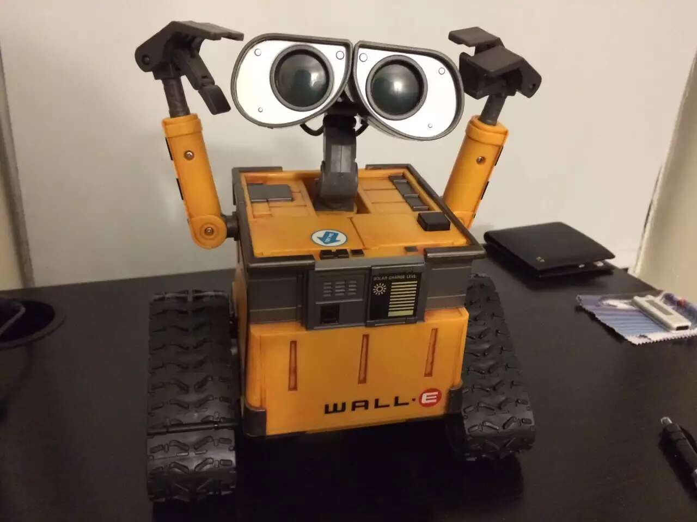
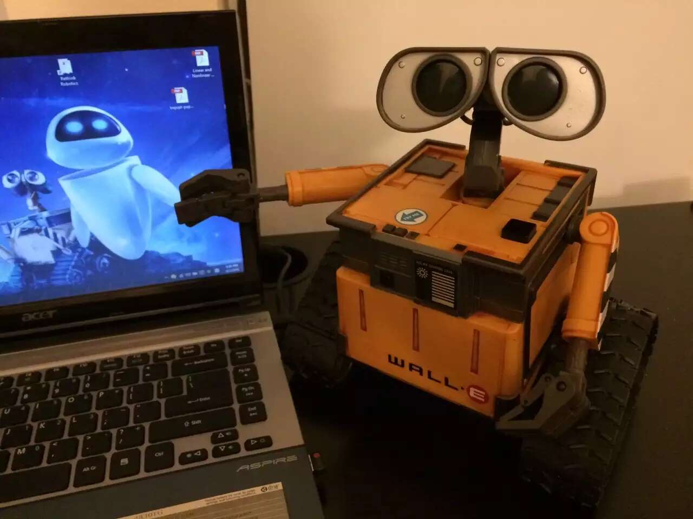

Various Robots
Robotic Space Painting
Traditional printer can only print on 2D space (flat paper). Paiting on the curved 3D surface is usually an expensive and time-consuming operation. We hacked a HP ink cartridge and mounted it on the robot arm. By synchronizing the robot arm movement and cartrige firing, the ink could be projected to 3D curved surface accurately. This innovation can be used to decorate various curved surface, such as cars, shoes, cups, body tattoos, etc, offering new possibilities in customization and design.
 Photo from SEMA@LV
Photo from SEMA@LV
DIY Robot Arm
3D print a AR3 robot arm. Write the firmware and motion planning modules from scrath.


Motion planning of humanoid robot
Central Pattern Generator (CPG) is a neuronal ‘circuit’ existed in the spinal cord of vertebrate. When CPG is activated, it can generate motor patterns for rhythmic movements such as walking, breathing, flying, and swimming, etc. We used the concept of CPG and adopt it into biped robot motion planning.
Wall-E
Built a Wall-E with motorized base, arm and head.
 